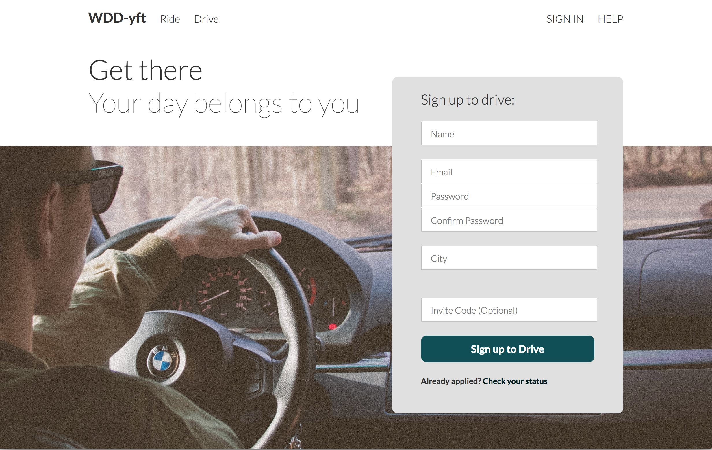
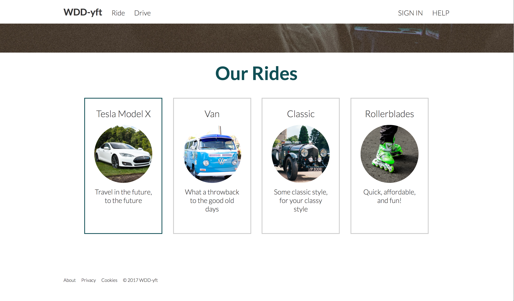
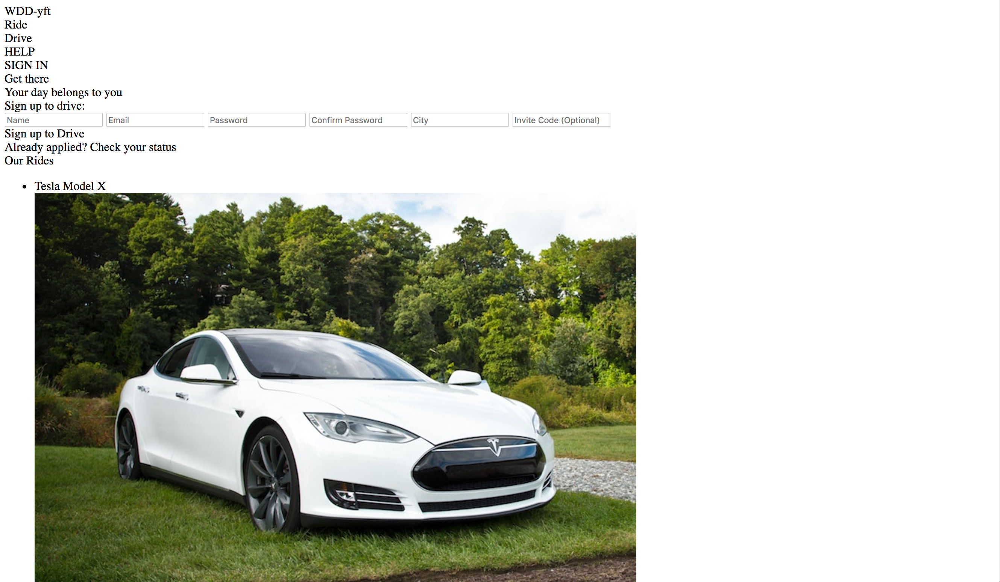
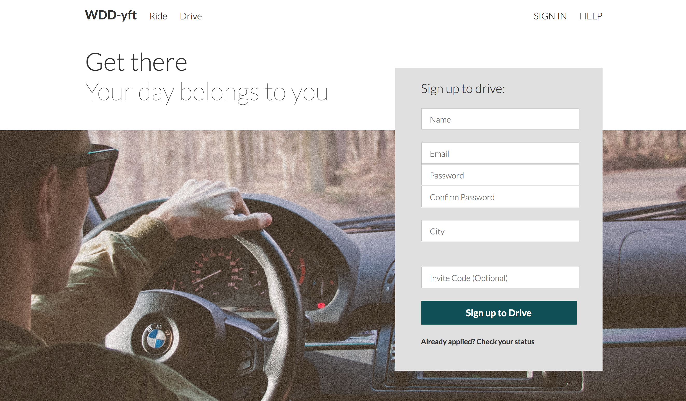
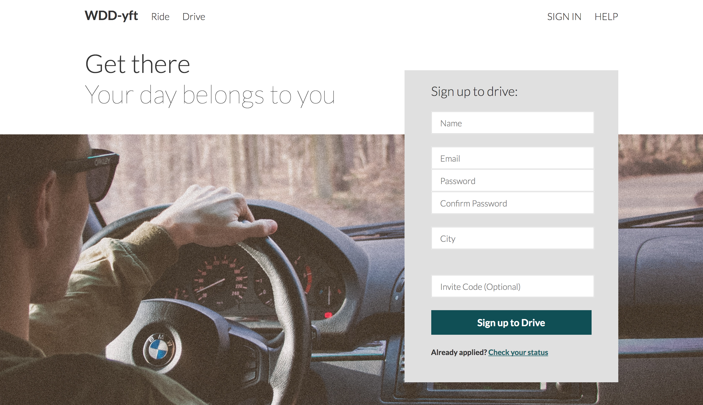
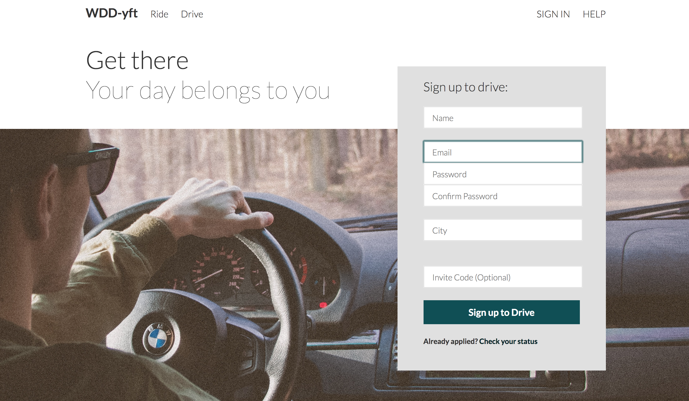
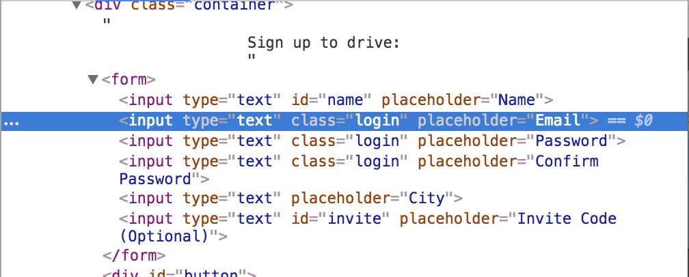
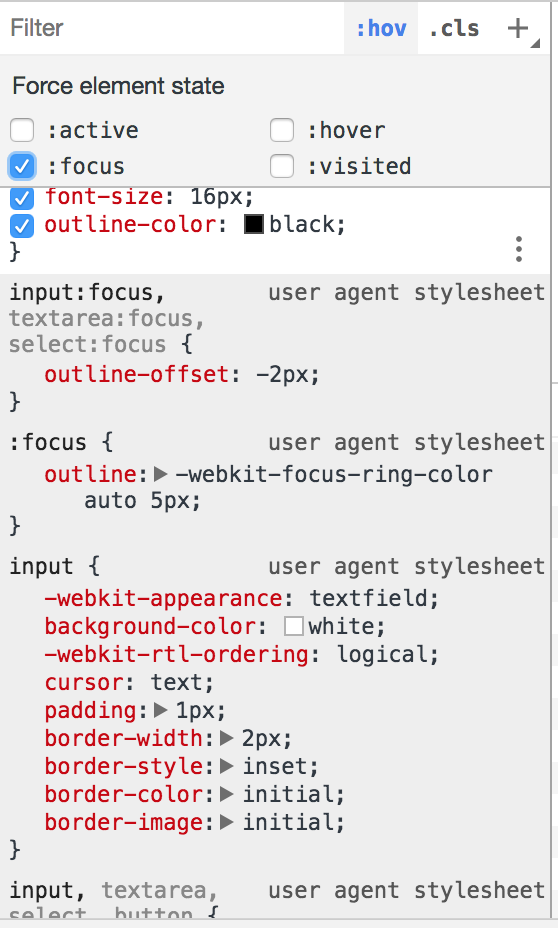

This lab will explore CSS and get us more familiar with selectors, and how we can use CSS to improve the look and feel of our webpages. Try to do as much as possible, but if you don't finish, that's alright.
Today, we will use our knowledge of selectors and pseudo-selectors to style our WDD-yft landing page. While you wait, discuss design decisions with your cohort-mates!
Throughout the lab, it might help to refer back to this week's slides if you'd like to revisit a concept from lecture.
At the end of this hands-on, you should have something like the page below (split into two pics)


Part 1: Linking our files
Open the starting index.html file in your preferred browser.
Woah, this site looks nothing like the end product! It should look like this right now:

This is because we haven't linked our HTML and CSS files. Before we proceed, open index.html and style.css in your text editor, so we can make this site look goooooood.
Now, let's correctly link style.css into index.html, so the browser can know where to find the CSS rules for the HTML tags on this page. We can do this using the <link> tag -- try it!
style.css includes some styles we've pre-defined for this lab. You should end up with something that looks like this:

Without this link, our html structure wouldn't be able to know where to find our CSS selectors that make the site look siq and cool.
Part 2: Playing with fire Pseudo-selectors
Pseudo-selectors are really cool because they allow us to put our elements in a special, temporary state. This helps draw the focus of the user to certain parts of the page and can also provide a response to user actions.
Currently, if you place your cursor over the navbar options, nothing happens. Let's provide a visual cue to the user!
- Add the appropriate pseudo-class to nav-element so that, when the cursor hovers over the navbar items, we can make something happen (once CSS rules are added).
- Now, add a property to this pseudo-class so that the navbar elements are underlined when the cursor is over it. (If you don't know how to add an underline, Google it! Something like "CSS text underline" should do the trick.)
- Change the
cursorCSS property so that the nav elements appear to be clickable when the cusor is over them. (Note: if you don't know what this visual looks like, visit one of your favorite websites and observe what happens to the cursor when you place it over a clickable item, like the nav bar. It's slight, but provides an almost subconscious cue to the user that something can be clicked.)
Great! Now our navbar seems functional! It should look like this when you hover over it:
But we aren't done with our pseudo-selectors! Our <button> doesn't visually indicate to the user that it can be clicked.
- Add the entire missing pseudo-selector to our CSS so the button will provide some sort of visual response when we place the cursor over it.
- Slightly change some properties, like color or opacity, to provide a good indication of the button's action and to distinguish it from its normal state. Keep design principles in mind.
- Change the cursor property so it it seems clickable (like we did for the navbar).
- The pseudo state response is really fast. Feel free to add a transition to slow it down and make it more pleasing.
This is what it should look like, when the mouse is out of the picture:

This is what it might look like when you hover over your button:

There are so many possiblities and you should explore websites on your own when you get a chance!
Part 3: All on your own 🚀
Up for a challenge?
- In the html file, add the appropriate link tag to the entire phrase "Check your status here" so that when the user clicks this phrase, it will direct the user to some other page. Choose whatever page you would like.
- Give that tag an
id. - In the CSS file, select this specific tag and give it some cool properties in its normal state.
- Now, add a pseudo-selector and change some properties for when your cursor is over the text so a user can easily recognize that it can be clicked.
- Add a pseudo-selector for when you're clicking down on the link. Add new properties to differentiate it from its normal state.
- Finally, add a pseudo-selector[2] to indicate to the user when they have clicked this link before. Add new properties to differentiate it from its other states.
Tip: It is helpful to check your work in an incognito or private browser window when dealing with different pseudo-selectors for links. Otherwise, your browser may remember your history of clicking the link and you won't be able to observe the different pseudo states since it will always appear in the state of being visited.
Awesome job! See how much you can do for just one tag? Hopefully you're getting the hang of these selectors now! The addition in step 3 was minimal, but can have a great effect. It should look similar to this:

Part 4: Some more CSS and fun extras
Now we can play around with other CSS properties to make our site look even better. Use your creativity and design knowledge to standout (or maybe blend in).
- Add some border properties to the
<button>and<form>elements (whatever you think will work). - Add a pseudo-selector to create a good visual response when your cursor goes over gallery items under "Our Rides".
- Create a pseudo state just for the 1st and 3rd items. Then create a different pseudo state for just the 2nd and 4th items. Think of how many different ways you can select them.
We can even make fine changes to default elements for an even greater user experience. Take a look at the form in our html code. When you click an input box, you'll notice that there is an outline color (in this case, a lightly blue) to indicate to the user that they are focused on this box and can type here. This outline color is essentially a default pseudo-class. Let's change the <input> box to match the main colors of the website[1].
Because <input> has a default outline-color, we don't need to create a pseudo-selector, but we can change it within the actual input tag in order to override this default property. Add an outline-color property to match the color of the normal state of the <button>. This is a minor touch that can go unnoticed, but actually adds a lot to the design.
Does your form now look like this when you type text?

Your final website should now look something like this and have some super sick pseudo states (maybe with your own creative touches!). These are two pictures, which is why it might look odd that the nav bar reappears.
You're done! Great work on taking your first foray into CSS 👌 find a WDD TA or instructor to get your attendance/checkoff word when you're ready.
If you want more CSS selectors practice, check out this practice game made by @flukeout.
More to Explore
Want to dive deeper into the content covered in this lab? You can explore some related topics here! If not, continue on to checkoff. You don't have to understand stuff we talk about in this section.
[1]: Optional tutorial on viewing the :focus state
You can see this default attribute of outline color in action by selecting one of the <input> lines in web inspector, and then clicking :hov by "filter" and finally selecting :focus in the checkbox dropdown, which activates the :focus selector for just this element. Skimming through the web inspector, you'll notice that a new attribute within the :focus selector has appeared, outline, which is implementing the default -webkit-focus-ring-color.


[2]: Even more pseudo-selectors
At this point, we've used the word "pseudo-selector" a lot--they're quite powerful in creating interactive behavior for a website without using JavaScript. Pseudo-selectors reflect the state of a webpage, or the current set of properties and values that define a particular instance of your webpage in the browser (you can think of state like chemical state: just as water can be ice or vapor, a checkbox can be checked or unchecked, or a div can be focused[1] or unfocused). That's why we're able to select for special conditions that arise while the user is interacting with a webpage, rather than only ever being able to select elements based on the type of element or its relationship to other elements.
If you'd like to learn more about what you can do with pseudoselectors, we've included the MDN specification of pseudo-classes. There are also pseudo-elements, which are elements that are rendered as part of an existing element (e.g. the first line of a <p> paragraph, or in a more common use case, a ::before or ::after pseudo-element that comes just before or just after the selected element). Feel free to explore this helpful and comprehensive guide on pseudo-classes and pseudo-elements as well. You can do some incredible things with these features, from creating complex shapes and icons to developing an entire website without HTML! Don't worry if you don't understand many of these selectors yet; you won't be required to know them for the course, but they're a lot of fun to work with, and offer some exciting creative potential.
Submission
Your lab checkoff word will be the same as your attendance word! No need to submit anything :)